k-Day 115｜
清晨時被冷醒，轉頭看看旁邊的鹿石。
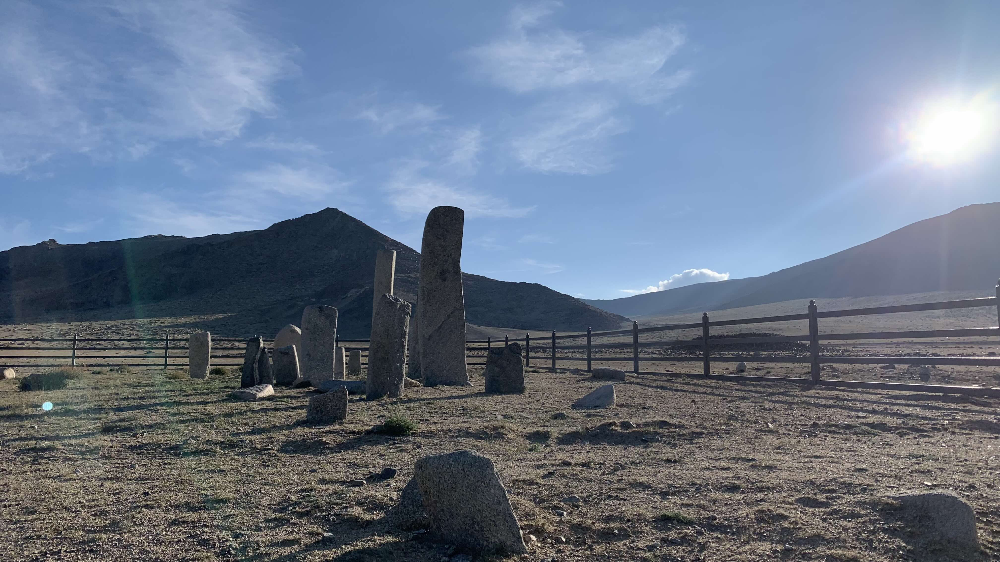
睡袋摸起來扁扁的，趁著吃零食的時候拿出來曬太陽。鞋子襪子也該曬一下，好久沒洗了，呈現酸臭味的襪子鋪在鞋面，已經沒有可替換的襪子。
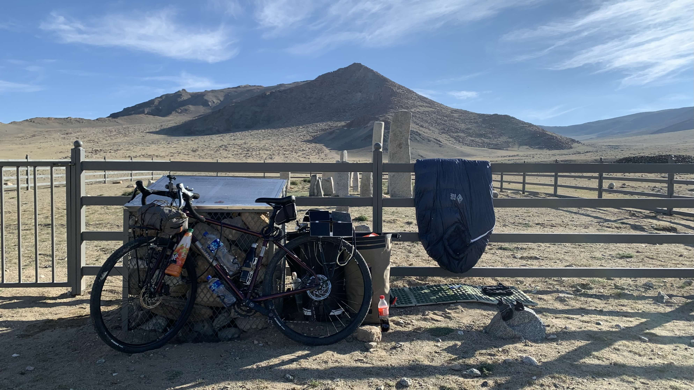
昨天買的泡麵有點雞肋，雖然不是嫌棄的時候，距離最近的城鎮還有95公里。
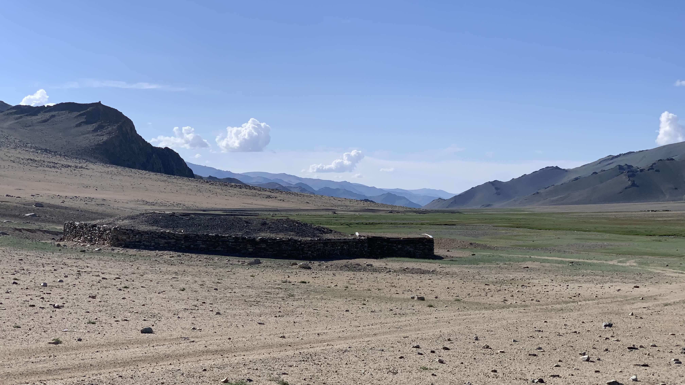
牽著車參觀不遠處的石造建築，看不出是什麼作用。
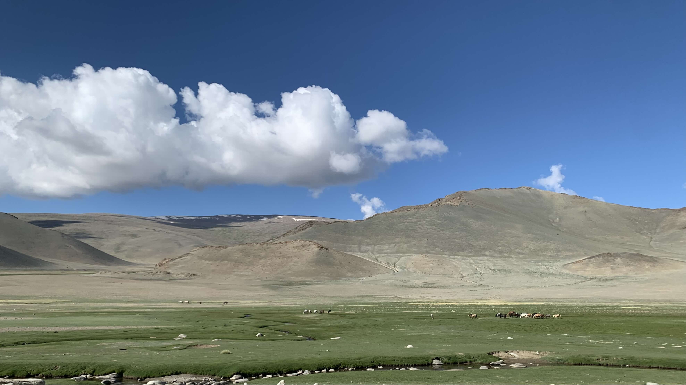
推著二十三號回到柏油路上，逆風不大，剛好跟下坡抵銷。河岸的馬群昨晚不知道去了哪裡，早上又出現了。
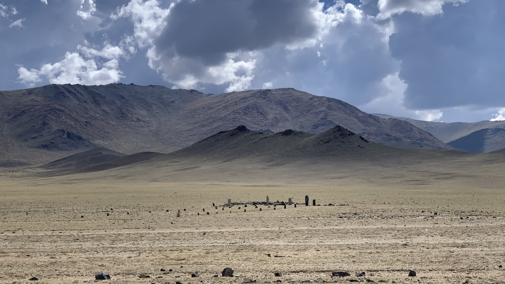
路旁出現圍繞著石堆的鹿石，突然意識到自己確實騎在通往新疆的道路，古代牧民也是沿著這條河谷越過阿爾泰山往西南邊移動的。
開心地踩著踏板，沒多久前方的天空竟然壓了一片烏雲，風向是往我後方吹的，試著加速穿越吧。
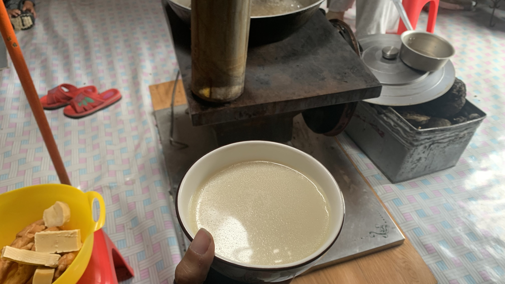
剛才的事情是這樣的，早上十一點準備穿雨衣的時候，山谷裡出現三座蒙古包。看到路過的我，所有見到我的小孩都喘著氣全力朝著我和二十三號跑來。
打了招呼後無法溝通，所有的小朋友靜靜圍著我，抬頭觀察二十三號的裝備。站在我旁邊的小朋友發現前貨架網袋理的薯片，其他小孩也騷動起來。
「要吃嗎？」邊說邊把薯片從網袋拿出來，交到一位小朋友手上。頓時孩子們對我失去興趣，薯片被高舉在空中，其他小孩繞著往草坪上跑，每個人抓一把伸手塞進嘴裡。
大概是聽到騷動，小孩的媽媽從蒙古包走出來，和我打了招呼，說：「到我家吃飯吧。」
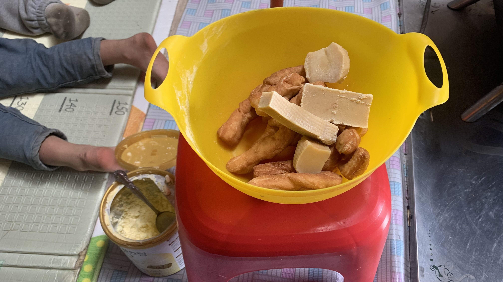
天知道我餓了多久，炸麵團塗上大湯匙挖起的新鮮奶油，配著熱奶茶一塊一塊往嘴裡塞。
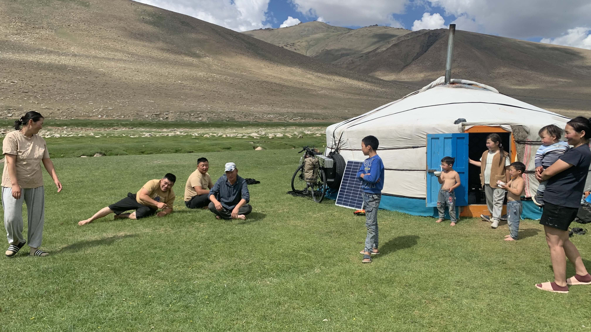
暫時填飽黑洞後走到蒙古包外和大家一起玩。邀請我吃飯的女主人說：「幫大家拍個照吧。」
既然這麼說，我就不客氣地拍了。
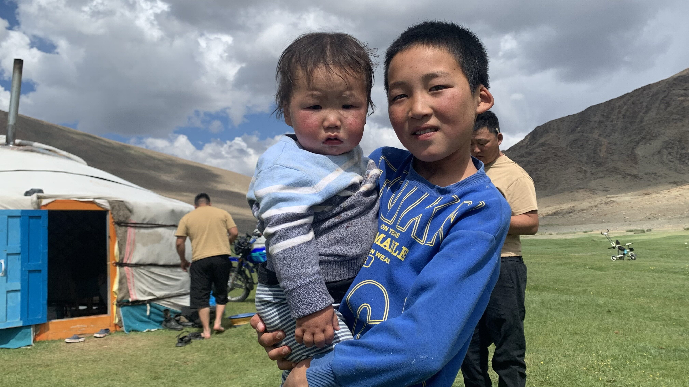
藍衣服的小男生長得相當時尚，是所有小孩裡較為沈穩的。抱著的應該是他的妹妹？
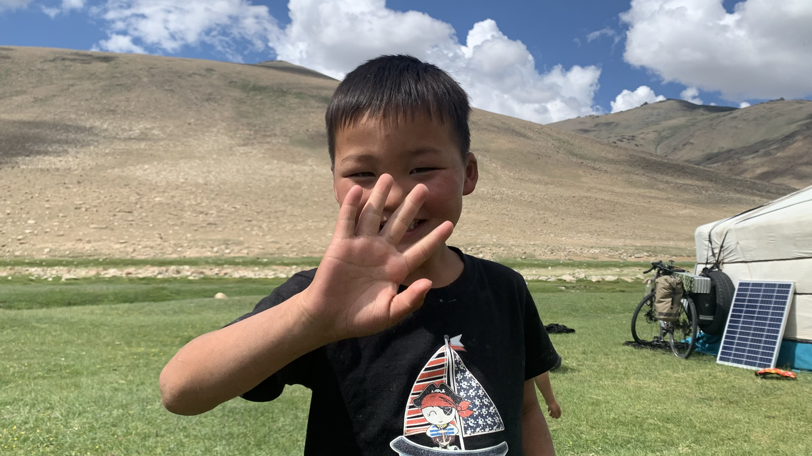
這位是見到我經過時狂奔到柏油路旁攔下我的第一批小孩，抓著薯片在草坪上到處跑，進了蒙古包後就一直靜靜地坐在旁邊。其他小孩都走了，他還是坐著。
問女主人：「這是你的小孩嗎？」
「不是，他只是對你好奇所以坐在這裡。」
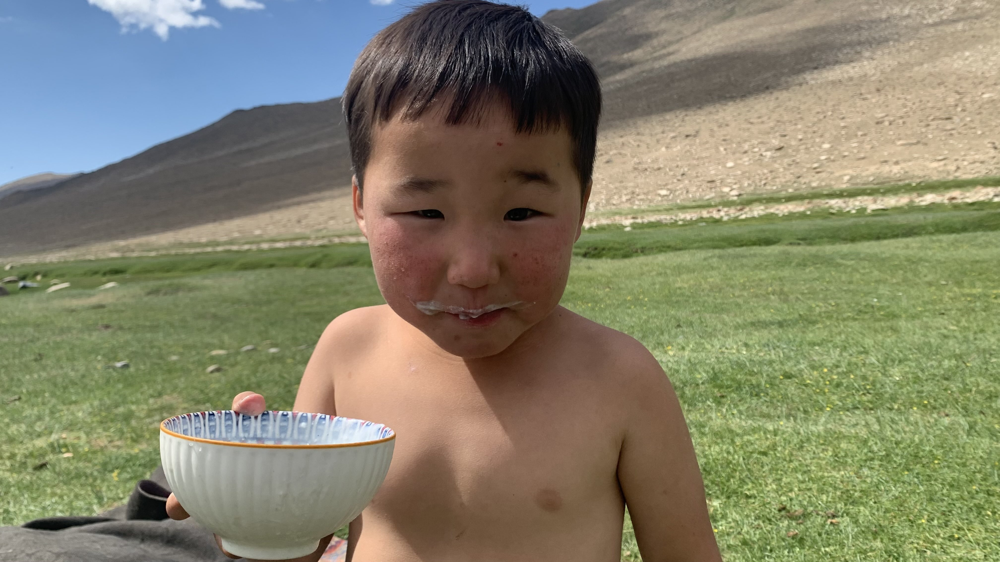
這位牛奶小朋友有另一個同樣打赤膊的兄弟，兩人幾乎複製相同長相，有點八字的眉毛非常有喜感。
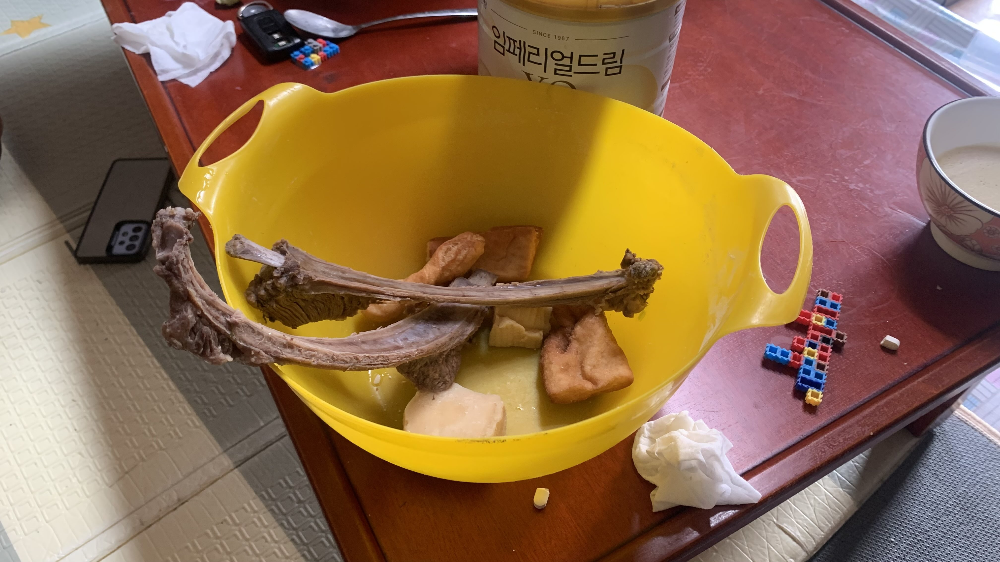
回到蒙古包，女主人打電話給在烏蘭巴托的姊姊。姊姊的中文非常好，以前在烏蘭巴托的台灣家扶基金會工作過。打電話給如此重要的角色，以為是要翻譯什麼嚴肅的事，結果姊姊在電話那頭問：「你吃羊肉嗎？我妹妹想煮羊肉，我知道台灣人比較不吃肉。」
不要說羊肉了，在山上餓了三天的我連羊骨都能咬碎吞下。
咬下第一口，此生從未吃過如此羊的羊肉。脂肪融化在嘴裡散發香氣，和咀嚼瘦肉時擠壓出的肉汁組合成一種前所未有的濃郁鮮甜。一頭完整的羊在口腔內膨脹，真是令人喜愛的動物。
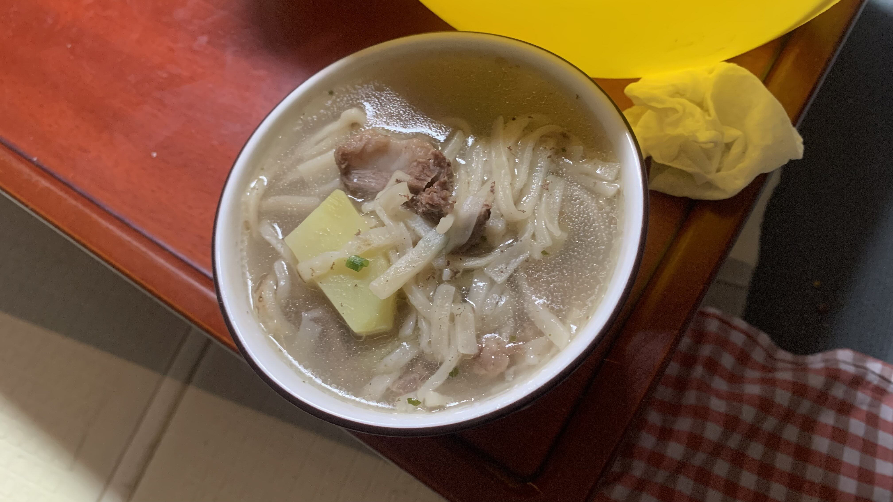
啃著羊肋排時，桌上又多了一碗羊肉麵。肉質比羊肋排更軟嫩，彈性還是在的，脂肪的比例更多了一些，滋味堪比和牛。整碗熱湯都是甜的，不是南部料理加糖的那種，是血的甜味嗎？
吃飽後女主人在蒙古包的地上鋪了睡墊和厚棉被，說我搭帳篷沒睡好，可以在這裡休息。
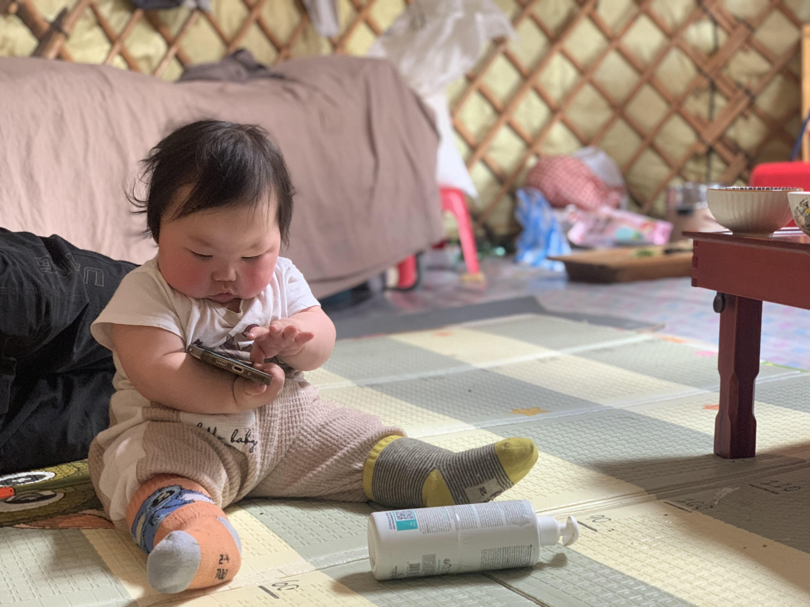
旁邊有位新時代嬰兒，是這裡最小的小孩。大人試了各種方法想拿回他手中的手機，不斷滾動地上的乳液瓶，按理說小孩應該會對滾動的動態感到好奇，然而他對自己完全打不開的黑色方形螢幕更有興趣。
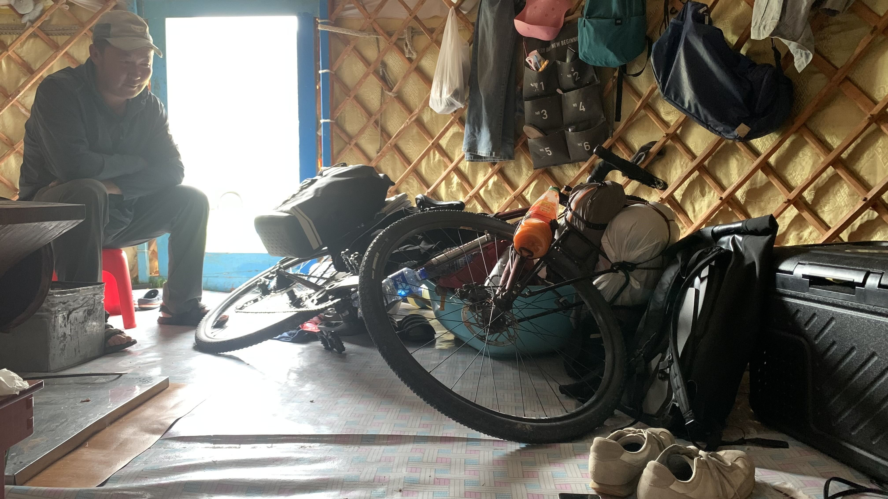
睜開眼睛看到二十三號躺在腳邊，原來下了一場雨，男主人擔心行李淋濕，在我睡到不省人事時把車扛進來。
看了看手錶，時間已將近四點。矮桌旁坐著一位應該是朋友的女性，帶了許多水果，大家正吃著水果聊天，坐在旁邊放空。
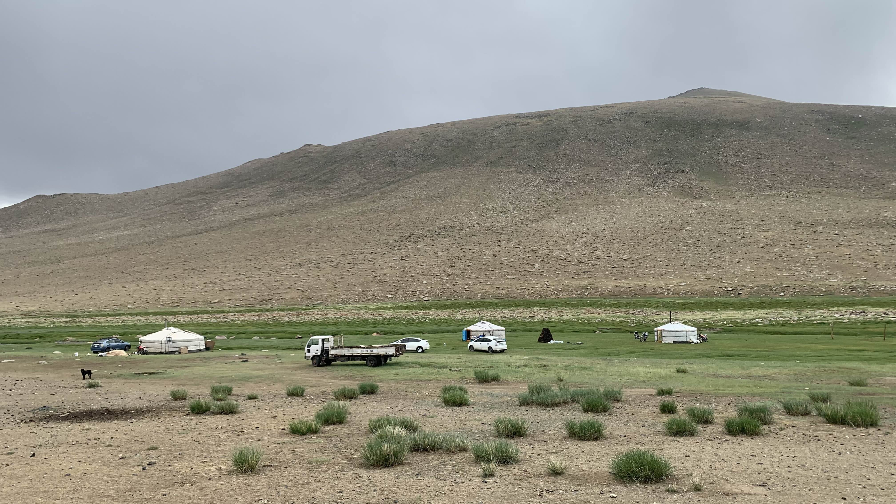
還是得走的，四點半和眾人告別，踩上踏板。
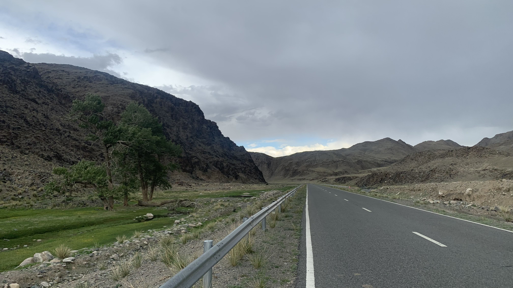
一路上都是下坡，加上順風加持，不到五點就騎了二十公里。
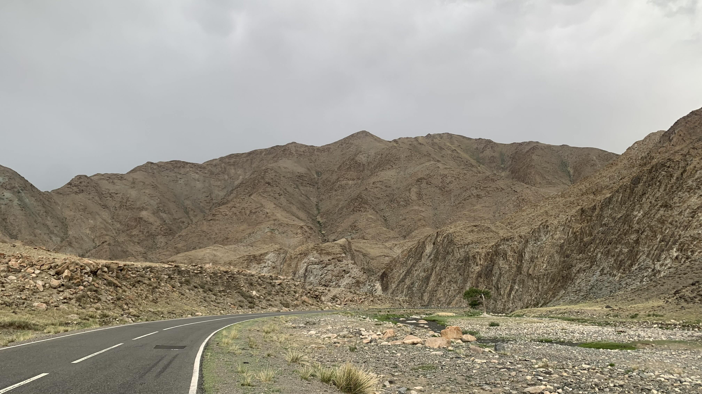
發現運動相機沒電了，這片河谷非常值得開車造訪。
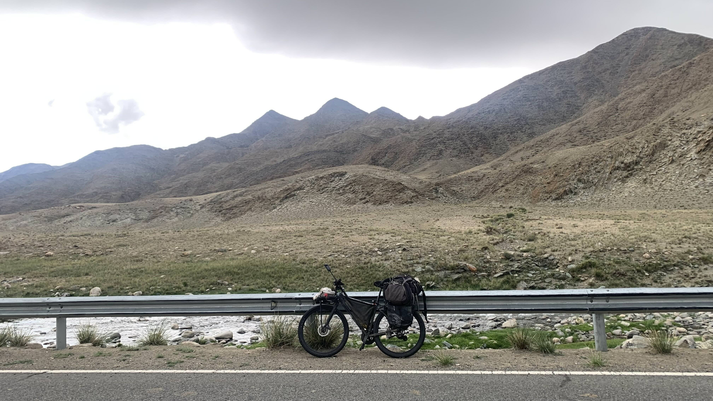
飛速下坡時看到路旁停了一輛明顯是遠遊的自行車，纏滿黑布的把手、後貨架上橫放的登山包，還有龍頭上架著的360，必須見見此人。
在車子旁喊了幾聲，沒人回應。把車靠在護欄人消失的狀況，按照個人經驗不是爬下去大便就是在下面休息。探頭往護欄下看，一位外國人躺在石堆上吃麵包。
此人是位頗具知名度的旅行者，從南非出發，用各種交通工具抵達蒙古。
「這輛車是在巴基斯坦時當地人送的，很多零件都壞了，只有兩段變速。我在中國邊境等了兩個月，一直下雪，直到現在才抵達蒙古。」聽著他隨性地笑著說出這些荒謬至極的事蹟，我的瞳孔震動了兩下。
「我跟前面的人買了馬，要騎著馬到烏蘭巴托。」他笑著補充。並拿出手機給我看他的Instagram帳號beyondthecapes。
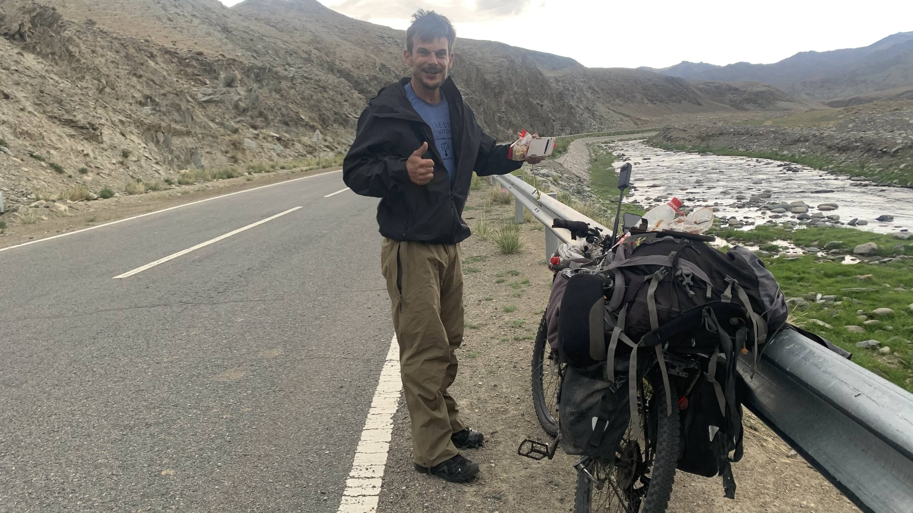
正要離開，聽到他打開360開始錄影，對著鏡頭用法語介紹我要騎自行車到巴黎喝咖啡，我回過頭用法語說：「Oui, sous le ciel de paris.」
他驚訝地回過頭，對鏡頭說完話後走來和我說：「等你到巴黎可以跟我聯繫，我在巴黎有很多朋友，也許可以幫你安排住宿。」
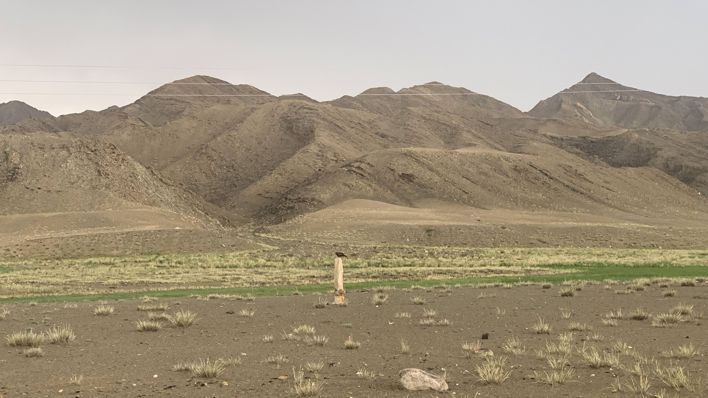
沿著河谷下切，一隻像老鷹但不是老鷹的禽類從後方的天空追上我，盤旋降落在野生鹿石上。讓鹿石在鹿石該存在的場所，接近永遠地乘載時間在此地的作用，當初將它立起，為它雕刻的人是如何看待他與這片河谷的草、山、天空、鳥之間的關係，又是如何用這塊石頭與世界的關係表象他所認知與所欲表現的精神。人們經過，沒有偷盜、破壞，國家沒有把它搬進博物館，我才能在今日與他面對面，看著一隻鳥停在上面。
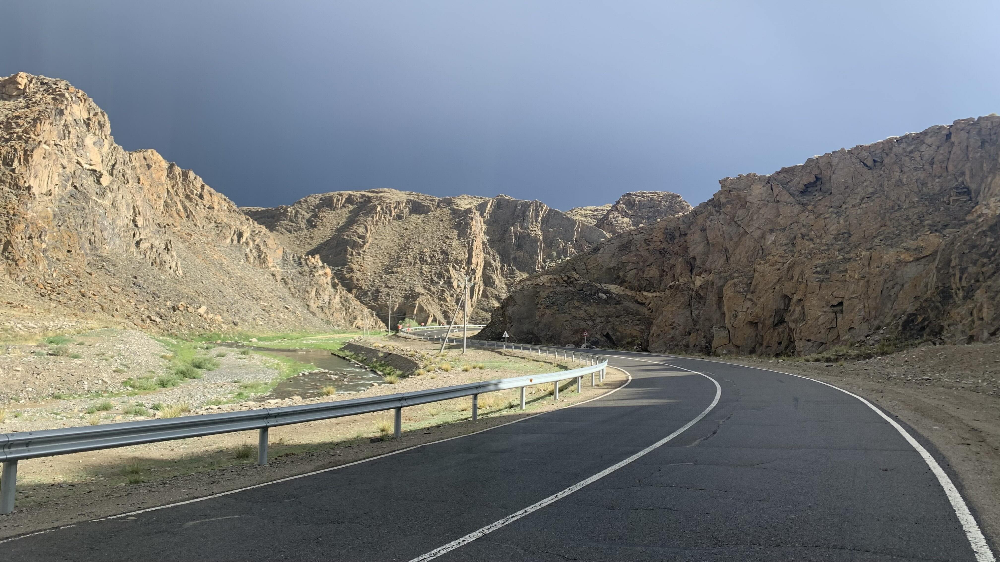
出太陽了。剛才交換了資訊，前方是好天氣，果然沒錯。今晚不急著趕到阿爾泰蘇木，聽說這裡有個隱藏地點，非常適合過夜，還能游泳。
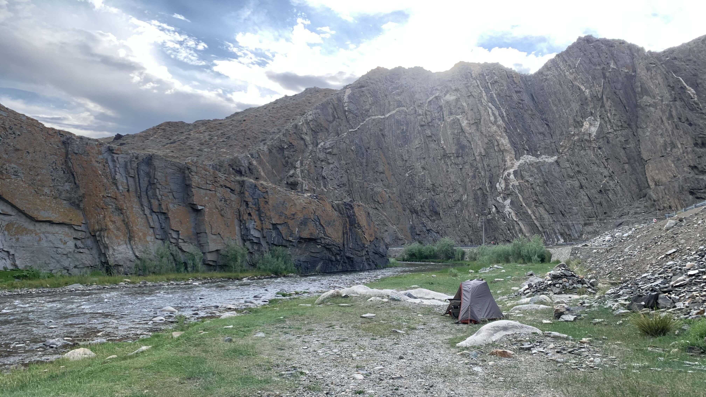
相當不錯啊，樓梯過於陡峭，二十三號沒辦法一起下來，就藏在背對著馬路的石牆後。
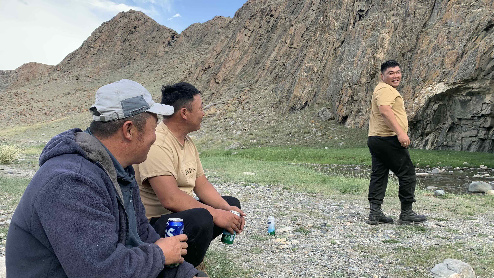
中午打擾的三座蒙古包主人突然從上方柏油路護欄探頭，想來是擔心我到底有沒有順利抵達城市。對於我選擇了這個當地知名的景點搭帳篷，三人都表示讚賞。他們將一瓶啤酒、橘子和蘋果交給我後就笑著回去了，現在看到照片裡有三瓶啤酒，那誰來開車呢。
蒙古有河狸嗎？我發誓今天看到好多長著河狸尾巴的駝色皮毛小動物。今天的目標是騎到河谷商店，至少得補充水源和食物再做打算。
今日花費： 0元